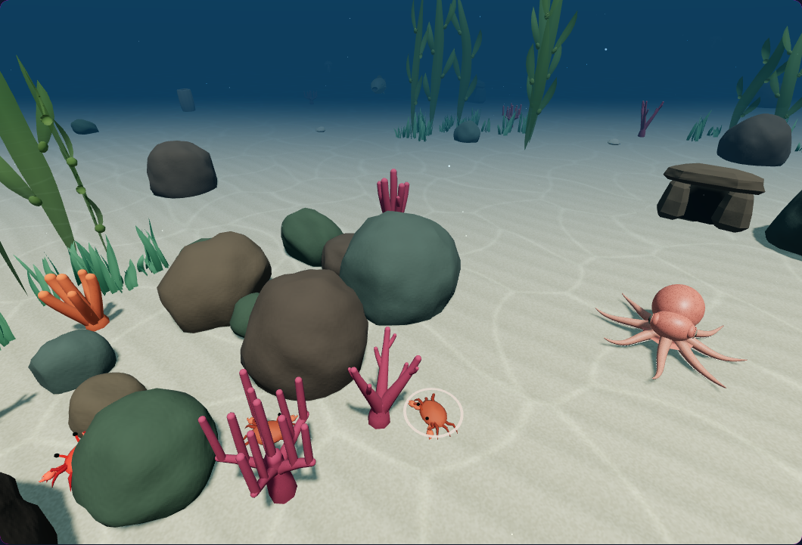
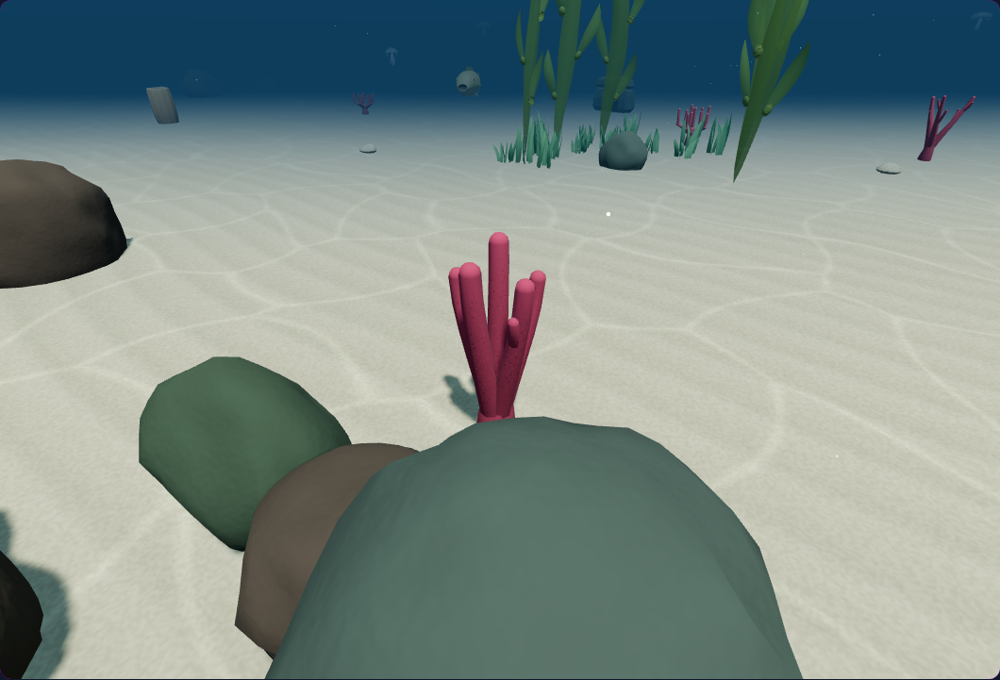
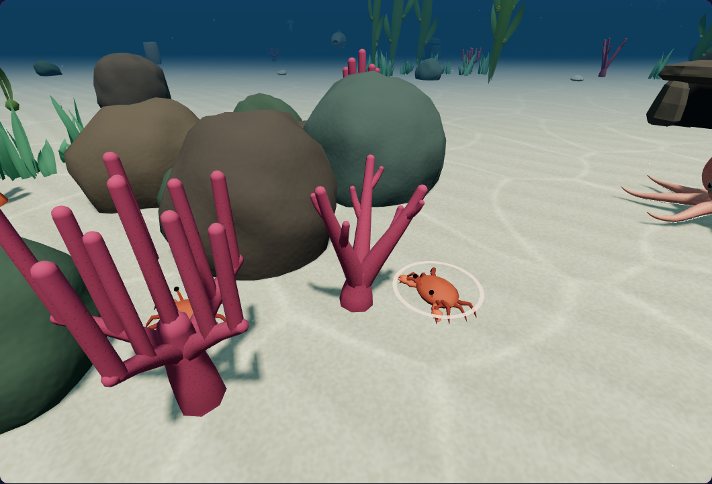
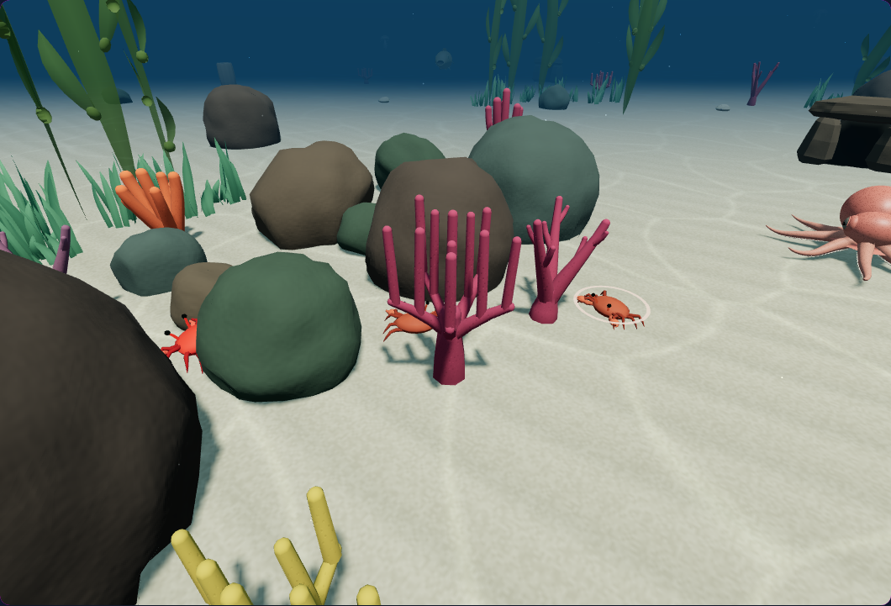
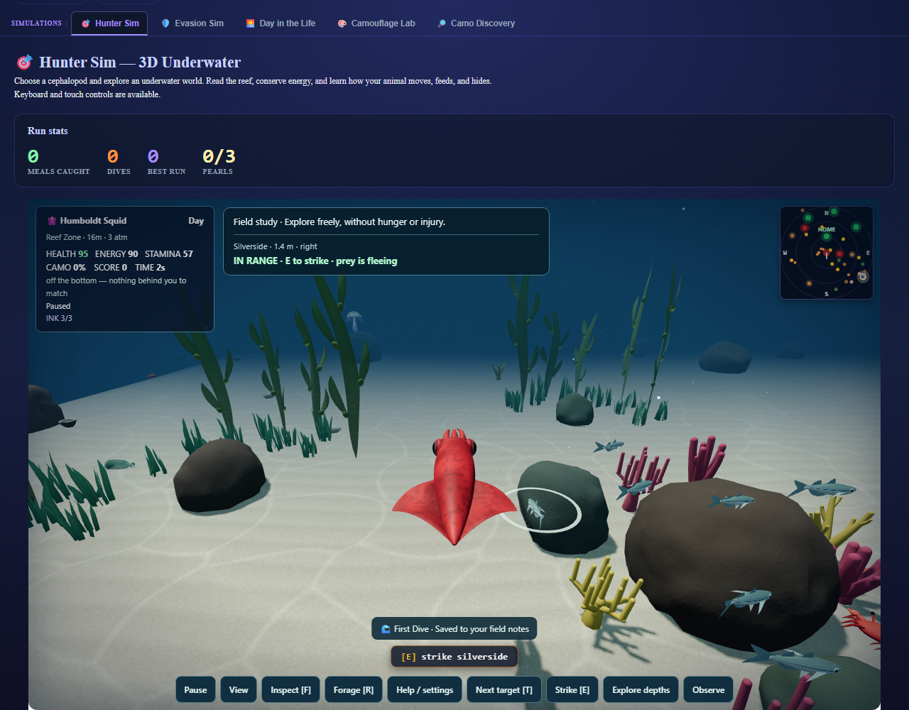
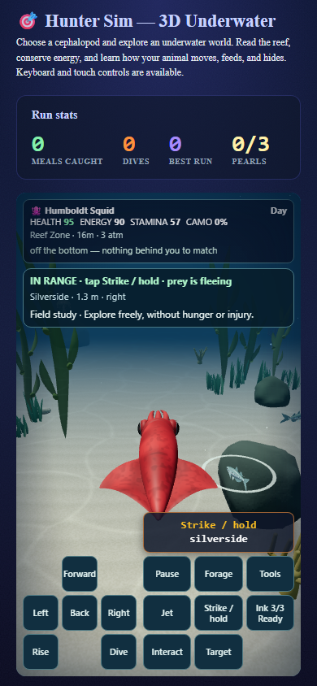

A more varied reef, with movement that follows its rocks
Weathered block, shelf, and wedge profiles; joined seam normals; subtle coral tissue variation and growth-tip color. Rock navigation uses a cached conservative outline with actual vertical bounds.
35 CPU checks and 14 browser checks passed. No added GPU meshes, materials, textures, or programs. Full report and practical limits

rock: 425 existing vertices; camera fixture following actual bounds.
finger: 675 existing vertices; camera fixture following actual bounds.
antler: 711 existing vertices; camera fixture following actual bounds.
corymbose: 972 existing vertices; camera fixture following actual bounds.Macro views follow actual object bounds using camera fixtures; they are not pixel-matched A/B comparisons.

squid-approach-desktop: native approach and paused capture.
squid-approach-phone: native approach and paused capture.Ordinary desktop and phone approaches use real controls and natural actors. Captures verify source identity and resource cleanup; no FPS or audio claim.
Source 26f15968d0260feb3a192b1bda52819666363e94b4231894d091ced5fa05e795